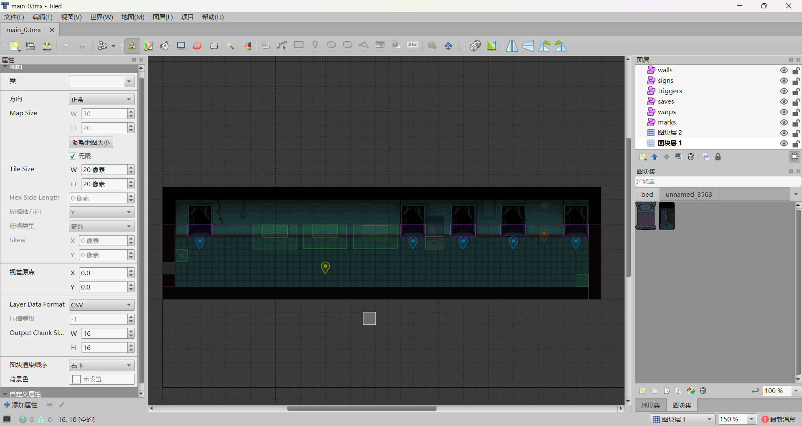
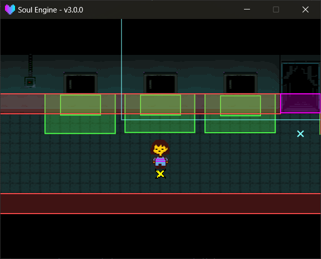

🔧 地图与对象层
地图用 Tiled 编辑，导出成 .lua 后放进 Maps/ 。引擎用内置的 STI 库读取它，并把对象层翻译成碰撞体。
路径： Maps/ （引擎默认）、 Game/Maps/ （Game 区，同名覆盖）。
模块路径： Scripts/Libraries/Overworld/map.lua ，以全局 Map 出场。
地图的基本参数¶
引擎自带的地图都是这套参数，新建地图时照抄即可：
| 项 | 值 |
|---|---|
| 朝向 | orthogonal |
| 瓦片大小 | 20 x 20 |
| 地图大小 | 30 x 20 （可改） |
| 导出格式 | .lua |
导出后的 .lua 放在 Maps/ 下（或 Maps/子目录/ 下），Tiled 工程与 .tmx 放 Maps/tmx/ 只是约定，方便自己找回来改。
图块集还有两条硬约束
图块集必须"嵌入地图"（不能用外部 .tsx ），否则 STI 会直接 assert 崩掉场景；图块尺寸必须是 20 × 20 。
图块图片路径、动画图块的做法也都有坑，统一写在 STI 与图块集 。

对象层¶
对象层的名字决定它会被怎么处理，名字写错（或写成中文）就整层被忽略。
| 层名 | 用途 | 常用属性 |
|---|---|---|
marks |
出生点 / 传送落点 | id 、 direction |
walls |
墙（实体碰撞） | id （可选） |
warps |
传送区域（碰到就换场景） | id |
triggers |
自定义触发区 | id + 任意自定义属性 |
signs |
告示牌 | id （可选） |
saves |
存档点 | id 、 room 、 x 、 y |
chests |
箱子 | id 、 give |
这些层分成三类，处理方式不一样：
| 类别 | 层 | 物理体 | 玩家能走过去吗 |
|---|---|---|---|
| 纯数据 | marks |
没有 | 是（它不参与碰撞） |
| 实体 | walls |
static 矩形 / 多边形 / 椭圆 |
不能，真的挡路 |
| 传感器 | warps 、 triggers |
kinematic + setSensor(true) |
是，走进去就记进交互列表 |
| 会挡路的交互物 | signs 、 saves 、 chests |
kinematic（不是 sensor） |
不能，但碰到照样记进交互列表 |
也就是说，只有 warps 和 triggers 是"能穿过去的区域"；告示牌、存档点、箱子和真的墙一样会挡住你，你得贴上去才能触发它们。这三者内部走的是同一套接触事件（ beginContact ），只是碰撞外形取的是贴图底部的一条窄边。
marks 没有物理体
marks 只被读成一个 {x, y, direction} 的坐标点，不生碰撞体、也没有贴图。所以它既可以摆在墙里，也可以拿来当纯逻辑锚点。
坐标要乘 2
引擎在读对象时会把 x / y / width / height 全部乘 2 再建碰撞体。
所以运行时拿到的坐标已经是世界坐标，但你在 Tiled 里看到的数字是缩放前的。
marks 出生点¶
决定玩家进这张地图时站在哪。id 是它的编号，direction 是进来后朝哪边。
- 什么都不指定 → 用第一个 mark。
DATA.marker有值 → 用id匹配的那个 mark（切场景时由Overworld.ChangeScene写入）。DATA.savedpos为真 → 用DATA.position存档位置（读档 / 从战斗回来）。
进战斗回来靠的就是 savedpos
遇敌时引擎会自动把 DATA.savedpos 置为 true 并记下当时的位置，所以打完仗玩家会回到原地而不是出生点。
walls 墙¶
walls 是唯一会真正挡住玩家的东西。三种形状都支持：
- 矩形（默认）
- 多边形 —— 斜墙、尖角都可以
- 椭圆 / 圆 —— 用
width或height里较小的那个当直径
rotation 属性会被正确应用（多边形与椭圆都会跟着转）。
墙的摩擦
墙与玩家的摩擦都是 0.01 ，这是刻意调低的：摩擦低，玩家撞到斜墙时才会沿着墙滑而不是被粘住。
两个值分别在 map.lua 的 wall_friction 与 char.lua 里，改成大数字就会"贴墙"。
warps 传送区¶
碰到就换场景的区域。它只是告诉你碰到了，换场景的动作由你在场景脚本里写（见 交互与对话 ）。
triggers 自定义触发区¶
和 warps 一样是传感器，但没有固定用途，属性随便加。最常见的用法是加一个自定义属性（比如 rr ）当"房间编号"，然后按它分流。
if (Overworld.getInteractResult("trigger", 1, "rr")) then
-- 碰到了 rr == 1 的触发区
end
signs / saves / chests¶
这三个引擎会自动生成贴图（告示牌、存档点、箱子），不用自己画。属性：
signs——id不填就按摆放顺序自动编号。saves——room是存档点上显示的地名，x/y是存档坐标。chests——give会被原样读进运行时对象的give字段（不填为false），但引擎里没有任何地方读它。箱子到底给什么，由CHEST（=DATA.chests）和你的场景脚本决定，见 菜单 · 存档 · 箱子 。
运行时访问¶
所有对象都会被收进 Map.objects ，按类型分表：
对象容器
Map.objects.marks/.walls/.warps/.triggers/.signs/.saves/.chests各自类型的运行时对象列表。Map.objects.unknowns名字没对上的对象层。这个表目前永远是空的——引擎只按已知层名分发，遇到不认识的层就悄悄跳过，不会往这里写。发现拼写错误要靠Map.debug_objects（见下）。Map.debug_objects原始 Tiled 对象，按层名索引（包括拼错的层），调试绘制专用。
层名拼错了怎么查
打开 Overworld.debug 后，Map.debug_objects 里所有对象层都会被画出来，包括拼错名字的那层。
颜色表里没有它的名字，就会落到 unknowns 的暗红色——看到一片暗红框，说明这层的名字没被引擎认出来。详见本页末尾「调试」。
每个运行时对象大致长这样：
{
x, y, -- 世界坐标（已 ×2）
width, height, -- 尺寸（已 ×2）
id, -- 属性里的 id
properties, -- 该对象在 Tiled 里填的所有属性
body, fixture, -- 物理体（walls / warps / triggers / signs / saves / chests 有）
sprite, -- 贴图（signs / saves / chests 有）
}
不想碰碰撞、只想按条件取一个对象，用 Overworld.FindObject 更省事，见 交互与对话 。
地图与物理世界¶
Map 方法
Map.Init(lua_file)载入地图。已初始化时会跳过并打印提示。Map.Update(dt)推进瓦片动画、物理世界、玩家与镜头。引擎自动调用。Map.Destroy()销毁所有碰撞体与贴图。Map.current当前地图文件的实际路径（可能是 Game 区那份）。Map.char玩家模块。Map.world物理世界。
World 方法
World.Init()建物理世界并注册碰撞回调。重复调用会被忽略。World.Update(dt)推进物理世界。World.Destroy()销毁物理世界及其中所有物体。World.interactions交互状态（详见 交互与对话 ）。
瓦片动画需要 Update
Tiled 的动画瓦片只有在 Map.Update 里被调用 map:update(dt) 时才会推进。
这一行引擎已经写好了，别在优化时删掉它。
镜头¶
Overworld.Init 会扫描所有可见瓦片层，算出实际有内容的那块矩形（考虑图层偏移与无限地图的负坐标区块），再按视口大小换算成 Camera:setBounds 。
覆盖区域比视口小时，镜头会被锁在正中央。
想手动接管：
ow.Init("Maps/main_scene/sol.lua")
Camera:setBounds(min_x, min_y, max_x, max_y) -- 覆盖自动结果
Camera:setPosition(x, y) -- 手动定位
Overworld.follow_player = false -- 关掉自动跟随
调试¶
Overworld.debug = true
开启后：
- 所有对象层的碰撞体会被画出来，按类型分色（
walls红、triggers绿、warps洋红、saves黄、chests橙、signs紫、marks青）。 - 按 空格 把镜头瞬移到鼠标位置。
